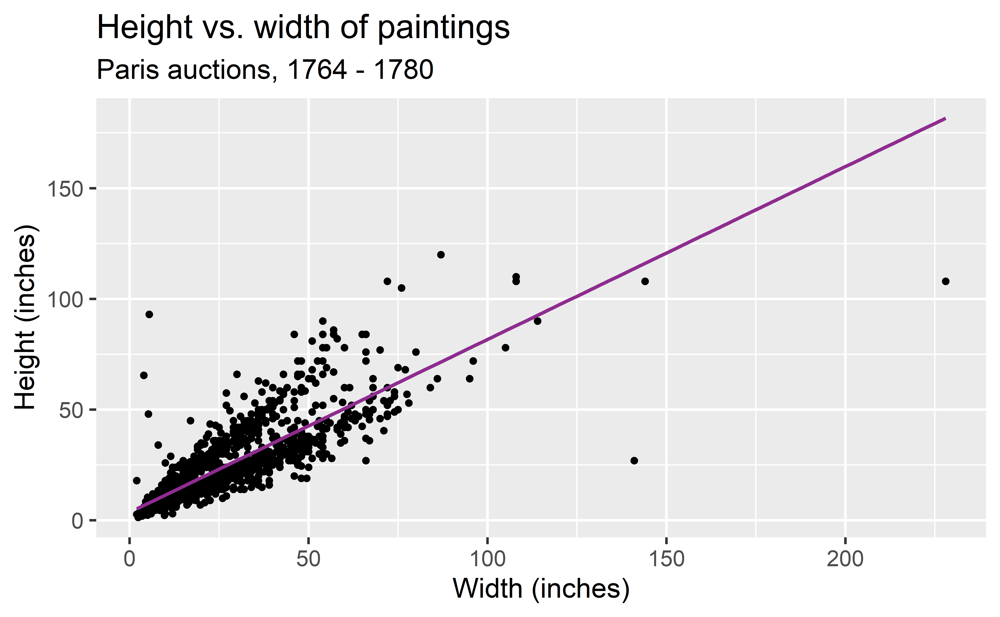
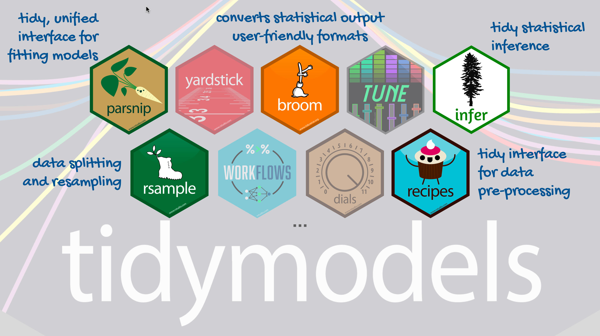
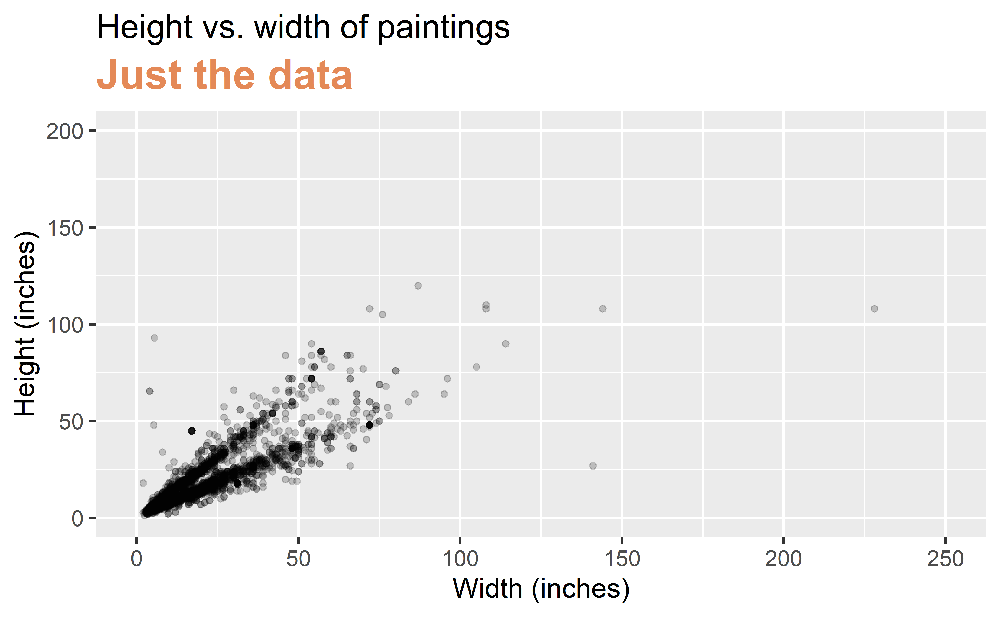
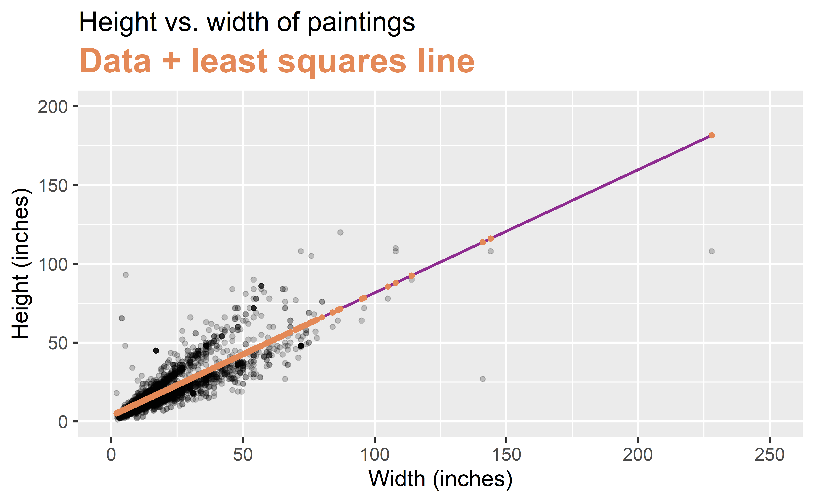
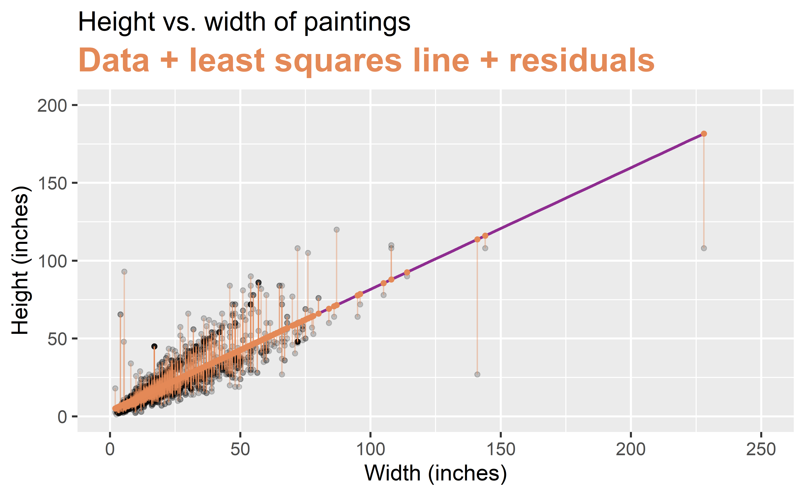

Fitting and interpreting models
Data Science in a Box
layout: true
class: middle
Models with numerical explanatory variables
Data: Paris Paintings
pp <- read_csv("data/paris-paintings.csv", na = c("n/a", "", "NA"))- Number of observations: 3393
- Number of variables: 61
Goal: Predict height from width
\[\widehat{height}_{i} = \beta_0 + \beta_1 \times width_{i}\]


Step 1: Specify model
linear_reg()Linear Regression Model Specification (regression)
Computational engine: lm Step 2: Set model fitting engine
linear_reg() %>%
set_engine("lm") # lm: linear modelLinear Regression Model Specification (regression)
Computational engine: lm Step 3: Fit model & estimate parameters
… using formula syntax
linear_reg() %>%
set_engine("lm") %>%
fit(Height_in ~ Width_in, data = pp)parsnip model object
Call:
stats::lm(formula = Height_in ~ Width_in, data = data)
Coefficients:
(Intercept) Width_in
3.6214 0.7808 A closer look at model output
parsnip model object
Call:
stats::lm(formula = Height_in ~ Width_in, data = data)
Coefficients:
(Intercept) Width_in
3.6214 0.7808 .large[]
A tidy look at model output
linear_reg() %>%
set_engine("lm") %>%
fit(Height_in ~ Width_in, data = pp) %>%
tidy()# A tibble: 2 x 5
term estimate std.error statistic p.value
<chr> <dbl> <dbl> <dbl> <dbl>
1 (Intercept) 3.62 0.254 14.3 8.82e-45
2 Width_in 0.781 0.00950 82.1 0 .large[]
Slope and intercept
.large[]
–
- Slope: For each additional inch the painting is wider, the height is expected to be higher, on average, by 0.781 inches.
| - Intercept: Paintings that are 0 inches wide are expected to be 3.62 inches high, on average. (Does this make sense?) |
Correlation does not imply causation
Remember this when interpreting model coefficients

.footnote[ Source: XKCD, Cell phones]
class: middle
Parameter estimation
Linear model with a single predictor
- We’re interested in \(\beta_0\) (population parameter for the intercept) and \(\beta_1\) (population parameter for the slope) in the following model:
\[\hat{y}_{i} = \beta_0 + \beta_1~x_{i}\]
| - Tough luck, you can’t have them… |
|---|
| - So we use sample statistics to estimate them: |
| \[\hat{y}_{i} = b_0 + b_1~x_{i}\] |
Least squares regression
- The regression line minimizes the sum of squared residuals.
| - If \(e_i = y_i - \hat{y}_i\), then, the regression line minimizes \(\sum_{i = 1}^n e_i^2\). |
Visualizing residuals

Visualizing residuals (cont.)

Visualizing residuals (cont.)

Properties of least squares regression
- The regression line goes through the center of mass point, the coordinates corresponding to average \(x\) and average \(y\), \((\bar{x}, \bar{y})\):
\[\bar{y} = b_0 + b_1 \bar{x} ~ \rightarrow ~ b_0 = \bar{y} - b_1 \bar{x}\]
| - The slope has the same sign as the correlation coefficient: \(b_1 = r \frac{s_y}{s_x}\) |
|---|
| - The sum of the residuals is zero: \(\sum_{i = 1}^n e_i = 0\) |
- The residuals and \(x\) values are uncorrelated
class: middle
Models with categorical explanatory variables
Categorical predictor with 2 levels
.pull-left-narrow[ .small[]] .pull-right-wide[ - landsALL = 0: No landscape features - landsALL = 1: Some landscape features]
Height & landscape features
linear_reg() %>%
set_engine("lm") %>%
fit(Height_in ~ factor(landsALL), data = pp) %>%
tidy()# A tibble: 2 x 5
term estimate std.error statistic p.value
<chr> <dbl> <dbl> <dbl> <dbl>
1 (Intercept) 22.7 0.328 69.1 0
2 factor(landsALL)1 -5.65 0.532 -10.6 7.97e-26Height & landscape features
\[\widehat{Height_{in}} = 22.7 - 5.645~landsALL\]
- Slope: Paintings with landscape features are expected, on average, to be 5.645 inches shorter than paintings that without landscape features
- Compares baseline level (
landsALL = 0) to the other level (landsALL = 1)
- Compares baseline level (
- Intercept: Paintings that don’t have landscape features are expected, on average, to be 22.7 inches tall
Relationship between height and school
linear_reg() %>%
set_engine("lm") %>%
fit(Height_in ~ school_pntg, data = pp) %>%
tidy()# A tibble: 7 x 5
term estimate std.error statistic p.value
<chr> <dbl> <dbl> <dbl> <dbl>
1 (Intercept) 14.0 10.0 1.40 0.162
2 school_pntgD/FL 2.33 10.0 0.232 0.816
3 school_pntgF 10.2 10.0 1.02 0.309
4 school_pntgG 1.65 11.9 0.139 0.889
5 school_pntgI 10.3 10.0 1.02 0.306
6 school_pntgS 30.4 11.4 2.68 0.00744
7 school_pntgX 2.87 10.3 0.279 0.780 Dummy variables
# A tibble: 7 x 5
term estimate std.error statistic p.value
<chr> <dbl> <dbl> <dbl> <dbl>
1 (Intercept) 14.0 10.0 1.40 0.162
2 school_pntgD/FL 2.33 10.0 0.232 0.816
3 school_pntgF 10.2 10.0 1.02 0.309
4 school_pntgG 1.65 11.9 0.139 0.889
5 school_pntgI 10.3 10.0 1.02 0.306
6 school_pntgS 30.4 11.4 2.68 0.00744
7 school_pntgX 2.87 10.3 0.279 0.780 - When the categorical explanatory variable has many levels, they’re encoded to dummy variables
- Each coefficient describes the expected difference between heights in that particular school compared to the baseline level
Categorical predictor with 3+ levels
.pull-left-wide[] .pull-right-narrow[ .small[]]
Relationship between height and school
.small[]